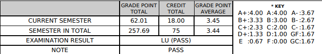
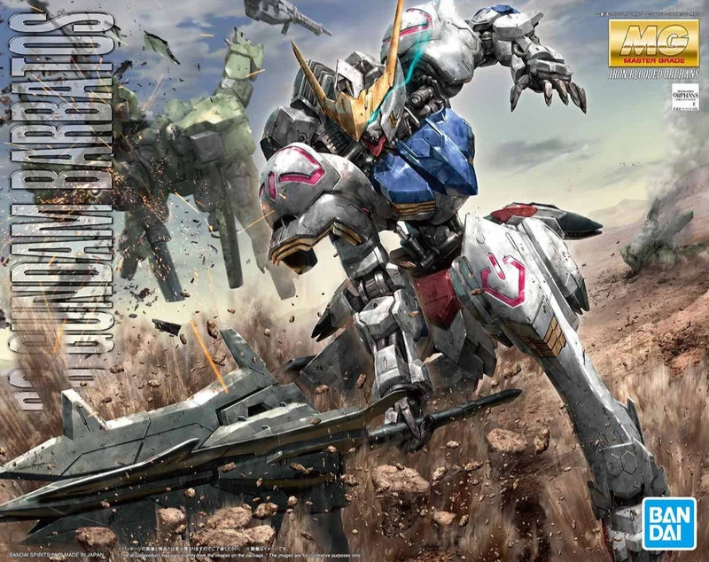

05 / Next Chapter
The next chapter
From finishing my diploma to the long-term plans after it, this is what I'm working towards.
-
01 · March 2027
Finish the diploma strong
My diploma ends in March 2027 and I want to finish it with my best result yet. My grades have gone up and down over the years but I always aim to beat my last result and I want to end this chapter on a high.

My latest result slip -
02 · 2027
Work first, then a degree
When my diploma ends in March 2027, I want to start working while I wait to continue my studies. I want to use that time to get real work experience, save some money and see how what I learned in class works in an actual job. Then I plan to start my degree around September 2027.
-

Mount Kinabalu view from far away 03 · 2027 goalClimb Mount Kinabalu
I was born and raised in Sabah but I have never climbed the mountain the whole state is known for. 2027 is the year I want to change that and finally stand at the top of Mount Kinabalu just like my father did.
-
04 · Ongoing
Build my body
I was an athlete back in primary school and I want to get some of that back. I'm not trying to become a bodybuilder. I just want to be fitter and stronger.
-

Master Grade Gundam Barbatos 05 · OngoingMy first Master Grade Gunpla
So far I've built five High Grade kits. The next step is a Master Grade, which is bigger, has more detail inside and takes a lot more patience to build. It's a small goal but it's one I'm really looking forward to.
-
06 · Long term
Make my cars more reliable
I drive a Myvi and a Waja. My long-term plan is to fix them up bit by bit until I can depend on them every day without worrying. One day, I hope to add a Honda Civic EG Ferio to the garage too. It's a 90s Civic saloon I've always loved for its simple, clean look, and I want to build it as my own project car using what I've learned.
That's the plan for now. Some of it might change along the way, but like always, I'll keep chasing my own best.